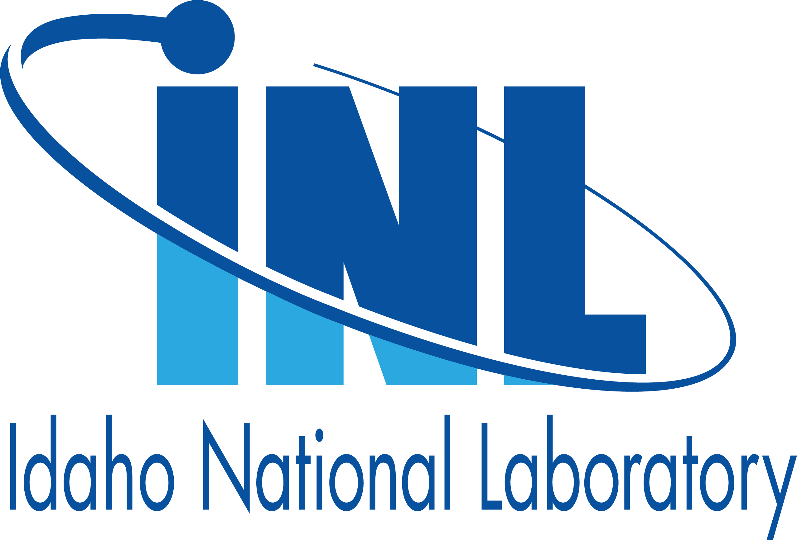

Experience
 Senior Full Stack Engineer
Senior Full Stack Engineer
Fidelity Investments · Full-time
August 2022 to October 2024
Remote, US
Responsibilities:
- Developed Segmented Control Component using Angular, NgRx, RxJS, & other advanced front-end technologies. A Segmented Control is a linear set of two or more segments each functioning as a mutually exclusive button.
- Engineered a reusable L3 page featuring a selection of predefined filtering options, allowing users to easily navigate and refine transaction data within specified time periods.
- Participated in the end-to-end development of NetBenefits multi-platform mobile app, from ideation of new features to the deployment, using state of the art technologies in Agile Framework.
- Singlehandedly incubated a research proposal to enhance the accuracy of any chatbot using Generative AI to improve response quality & user engagement. Prototype was developed using Python and React
- Managed code repositories using Git, implemented complex patterns with Regular Expressions and incorporated Jest for Test Driven Development.
 R&D Scientist II
Idaho National Laboratory · Full-time
July 2019 to August 2024
Remote, US
Responsibilities:
- Utilized Python Libraries (Pandas, NumPy, scikit-learn, Matplotlib, PyQt, etc.) and Object-Oriented Programming Principles to develop a suite of tools for automating metadata creation and streamlining data quality assessment for transportation datasets.
- Co-authored HERON as a Tool for LWR Market Interaction in a Deregulated Market Software Copyright Assertion: HERON Code repository: Github.
- Created Regression Algorithms Toolbox to conduct analysis of Bioenergy datasets.
- Led the implementation of MICE in R, an AI technique, to predict missing values and enhance data completeness by 15%, enabling precise analysis of agriculture data and empowering data-driven decision-making processes.
- Prototyped a GUI that interacts with GraphQL API to access inventories and uses Natural Language Processing to recommend similar items for a supply chain management project.
- Pioneered the development of an interactive web-based mapping and geospatial analytics tool, like Google Maps, harnessing the capabilities of Angular and MySQL for robust and responsive user experiences.
- Applied advanced computational techniques to analyze and optimize the deployment of Unmanned Aerial Vehicles, enhancing efficiency in last-mile package delivery.
- Leveraged Vertex AI AutoML and BigQuery ML to architect, train, and deploy high-performance machine learning models on Google Cloud, facilitating data-driven insights and enhancing decision-making processes.
- Served as Co-Principal Investigator on a $1.5 million R&D project aimed at enhancing the security, reliability, and resiliency of energy systems.